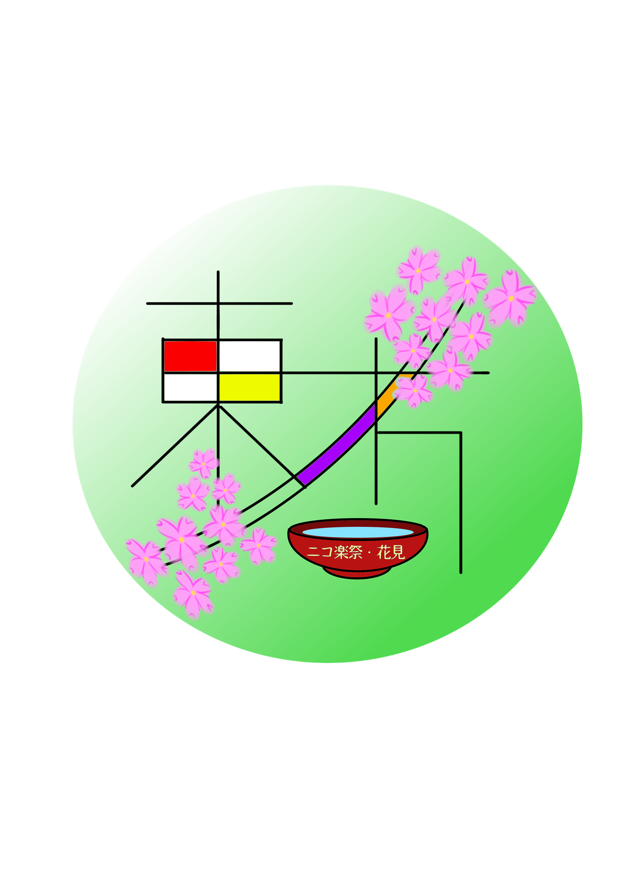

|
第２回東方ニコ楽祭・花見
閉幕しました。たくさんのご参加ありがとうございました！
開催概要
＜企画名称＞：東方ニコ楽祭・花見
＜企画内容＞：東方自作アレンジ・西方自作アレンジ・東方風自作曲 の動画投稿祭（今回もイラスト参加、歌詠み参加を実施します）
＜開催期間＞：2019年4月12日（金）午後9時～4月14日（日）午後9時
＜参加方法＞：期間内に動画を投稿して、投稿した動画に「東方」、「東方ニコ楽祭・花見」と「東方自作アレンジ」、「西方自作アレンジ」、「東方風自作曲リンク」の内の該当するタグをロックする。
＜企画趣旨＞：桜舞い草木芽吹き、新たな旅立ちと出逢いの春、その色づく四季のはじまりに、幻想的な調べを集わせて聴き観て楽しもう♪
詳細説明は主催者ブロマガにて
告知動画
途中経過動画
オープニング動画
歌詠み紹介動画
エンディング動画
参加動画一覧
参加静画一覧
|